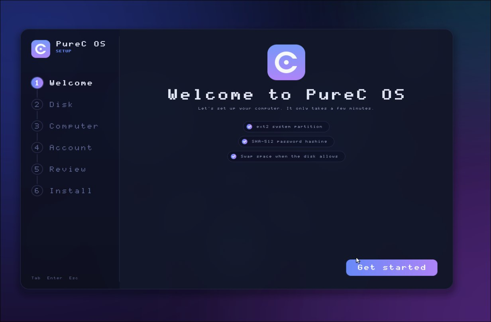

An entire OS,
written in pure C.
Kernel, drivers, filesystem, window manager and a real Ring 3 userspace. No Linux underneath, no shortcuts. Every layer is built from scratch and boots on real hardware.

ring 3
arch x86_64
PureC 1.2.28 SMP x86_64
Small enough to read,
big enough to be real.
Watch it come alive.
From Limine handoff to a drawn desktop in seconds. It runs in VirtualBox and QEMU, and on bare-metal machines with AHCI storage and USB input.
Everything an OS needs,
nothing it does not.
A real graphical desktop
Compositor with double buffering, draggable windows, taskbar, icon grid with snap-to-cell, interface scaling up to 400% and a wizard-style installer. All drawn by the OS itself.
True Ring 3
User programs run unprivileged behind a clean syscall boundary. Fork, execve, pipes and signals are in.
Networking
Intel PRO/1000 and PCnet NICs, with 802.11 association groundwork for Wi-Fi.
VFS and ext2
Mount-table VFS with a full ext2 implementation. Install it to a disk and boot from it.
Runs Doom
SDL2 works. So does Chocolate Doom with Freedoom assets, plus Lua, MicroPython and TinyCC.